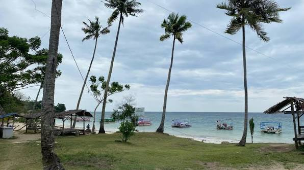

Pantai Tanjung Karang
Berlokasi di Kabupaten Donggala, pantai ini terkenal dengan hamparan pasir putih, air laut yang jernih, serta keindahan bawah laut yang memikat. Berkat pesonanya, Pantai Tanjung Karang menjadi tujuan favorit wisatawan lokal maupun mancanegara, terutama bagi pecinta snorkeling dan diving.

Pantai Bonebula
Pantai Bonebula adalah salah satu destinasi wisata terbaik di Kabupaten Donggala, Sulawesi Tengah. Terletak di Desa Towale, Kecamatan Banawa Tengah, pantai ini menawarkan keindahan pasir putih yang lembut, air laut yang jernih, serta panorama matahari terbenam yang memukau.

Pantai Kura Kura
Pantai Kura-Kura di Desa Boneoge, Donggala adalah destinasi populer yang menawarkan keindahan pasir putih bersih, air laut jernih biru-toska, dan panorama sunset yang memukau. Berjarak sekitar satu jam dari Kota Palu, pantai beratmosfer tenang mirip Bali ini menjadi favorit wisatawan berkat suasana rindang pohon kelapa dan ikon patung kura-kura raksasanya.